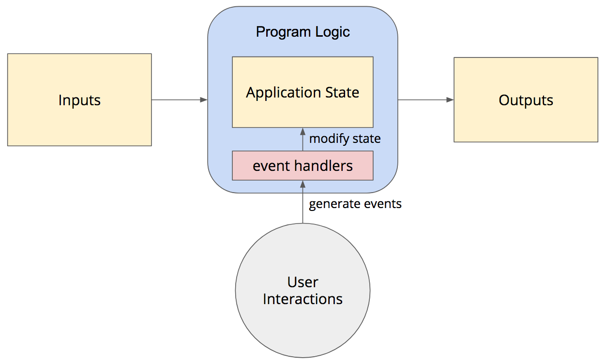

Keyboard shortcuts:
N/СпейсNext Slide
PPrevious Slide
OSlides Overview
ctrl+left clickZoom Element
If you want print version => add '
?print-pdf' at the end of slides URL (remove '#' fragment) and then print.
Like: https://wwwcourses.github.io/...CourseIntro.html?print-pdf
PyQT - Lecture 4
Created for

Hand Code the UI of a Login Form Widget
Hand Code the UI of a Login Form Widget
Why?
- The code produced by pyuic5 is overwhelmed and not clean.
- Hand-coding could be even faster (if you have know your IDE well) than using the QtDesigner.
- You can really learn Qt App methodology only if you have hand-coded a simple GUI App.
- For next examples, we'll be using the template we've already created:
- Tip: you can setup a custom snippet with this template in your editor. See Tutorial: Creating and Applying Live Templates (Code Snippets)
QWidget class
- QWidget is the parent class of all other widgets (including QMainWindow)
- All properties and methods of
QWidgetclass will be also available in any other widget. - When a QWidget is created without a parent and its show() method is called, it becomes a top-level window
- When we use it as a top-level window (as we did with in our template), there are some window-specific properties we can set.
- note, that the cursor value is an enum type, defined in QtCore module
- Every property of a
QWidgetobject has its Access function, which allows you to set that property after the object is created - Reference: QWidget Class
window = MainWindow(cursor=qtc.Qt.WaitCursor)
# equivalent to example above
window = MainWindow()
window.setCursor(qtc.Qt.WaitCursor)
Primary and Child Widgets
- Any QWidget that has no parent will become a window, and on most platforms will be listed in the desktop's task bar.
- Such window is called primary window
- Usually, in our GUI App we want only one primary window.
- If we pass a parent argument when we create new widget, that widget will be a child of the prent widget and will become a part of its parent.
- Reference:
- Primary and secondary windows
Create user input widgets
- Of course, we did not see the created widgets, because they are not attached to our main window
- We can attach them directly to out main window by passing it as parent argument to QLineEdit() constructor :
- But we did not set the geometry of our main windows, so the result is not what we want.
- References:
- QLineEdit Class
- EchoMode Property
# --------------------------- your code starts here -------------------------- #
# create user input widgets:
user_name_input = qtw.QLineEdit()
password_input = qtw.QLineEdit()
#
password_input.setEchoMode(qtw.QLineEdit.Password)
# ---------------------------- your code ends here --------------------------- #
# create user input widgets:
user_name_input = qtw.QLineEdit(self)
password_input = qtw.QLineEdit(self)
Window Geometry

- To set our window geometry we can use the
geometryproperty or its accessor method:setGeometry - Reference: Window Geometry
class MainWindow(qtw.QWidget):
def __init__(self , *args, **kwargs):
super().__init__(*args, **kwargs)
#set window geometry
self.setGeometry(300, 200, 500, 300)
...
Widget Position
- In order to set a widget position within its parent widget, we can use the
move(int x, int y)QWidget widget method - But there is a better approach - to use a Layout for children positioning
- Reference: pos : QPoint
class MainWindow(qtw.QWidget):
def __init__(self , *args, **kwargs):
super().__init__(*args, **kwargs)
#set window geometry
self.setGeometry(300, 200, 500, 300)
# create user input widgets:
user_name_input = qtw.QLineEdit(self)
password_input = qtw.QLineEdit(self)
user_name_input.move(20, 10)
password_input.move(20,50)
Create the Form Layout
- The Qt layout system provides a simple and powerful way of automatically arranging child widgets within a widget to ensure that they make good use of the available space
- Qt provides many Layout Classes useful for different use-cases.
- For our Login Form Wdget is best to use the QFormLayout Class
- The QFormLayout class manages forms of input widgets and their associated labels.
- References:
- Layout Management
- QFormLayout Class
# --------------------------- your code starts here -------------------------- #
# create user input widgets:
user_name_input = qtw.QLineEdit()
password_input = qtw.QLineEdit()
password_input.setEchoMode(qtw.QLineEdit.Password)
# create the submit button:
btn_submit = qtw.QPushButton('Login')
# create Form Layout and layout widgets in it
form_layout = qtw.QFormLayout()
form_layout.addRow('User name: ', user_name_input)
form_layout.addRow('Password: ', password_input)
form_layout.addRow(btn_submit)
# apply the form_layout to our widget
# this will attach our form widget's into main window
self.setLayout(form_layout)
# ---------------------------- your code ends here --------------------------- #
TASK: add Submit and Cancel buttons to our login form

Introduction to Signals And Slots
Preliminary: how a GUI app works
Procedural app (batch-processing application)
def sub_task_1():
pass
def sub_task_2():
pass
#....
def sub_task_N():
pass
if __name__ == "__main__":
sub_task_1()
sub_task_2()
# ...
sub_task_N()
A GUI App (event-driven) processing
- A GUI App processing model is event-driven 
- An event can be any user action, like click, scroll, input etc.
- An event handler is a function which defines the actions that must be executed after an event is triggered.
{kind=link}
The Event Loop
- Event-driven programming relies on event-loop to process events
def start_event_loop():
while True:
if event_queue_not_empty:
if terminate_signal:
exit()
else:
process event()
else:
wait for event
{kind=link}
What are Signals And Slots?
- Signals and slots are used for communication between objects.
- For example, if a user clicks a Close button, we probably want the window's close() function to be called.
- A signal is s notification that the event has happened
- A slot is a function that is called, when that event occurs.
- In order to establish communication between objects, we connect a signal to a slot to achieve the desired action

different combinations of signals and slots
- One signal can be connected to one or many slots
- Many signals can be connected to the same slot
- A signal can be connected to other signals
- Connections can be removed
Signals and Slots Example
self.btn_cancel = qtw.QPushButton('Cancel')
self.btn_cancel.clicked.connect(self.close)
Add GUI feature to your app
Add GUI feature to your app
Create/Clone repos
- Create your github repo, or clone someone's else (if you want to contribute to the project)
- References:
- Create a repo @docs.github.com
- Cloning a repository @docs.github.com
Create a branch for GUI of your app
- If you already have a working application with console IO, and you want to refactor your app to work with GUI, it's best to separate your work in a different branch.
- Git branching branches in a nutshell
- Git Feature Branch Workflow @atlassian.com
# make sure you're in root project folder, and type:
git checkout -b GUI
# your prompt should change and show the branch name (GUI)